Note
Click here to download the full example code
Tensor approximation of the cantilever beam model¶
In this example, we create a low-rank approximation in the canonical tensor format of the cantilever beam.
In order to fit the hyper-parameters of the approximation, we use a design of experiments which size is 10000.
We consider a cantilever beam defined by its Young’s modulus  , its length 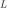 and its section modulus 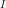. One end of the cantilever beam is built in a wall and we apply a concentrated bending load
, its length 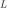 and its section modulus 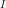. One end of the cantilever beam is built in a wall and we apply a concentrated bending load  at the other end of the beam, resulting in a deviation
at the other end of the beam, resulting in a deviation  .
.

The beam geometry¶
Inputs
- : Young modulus (Pa), Beta(r = 0.9, t = 3.5, a = 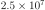, 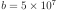)
- : Loading (N), Lognormal(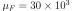, 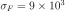, shift= 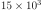)
: Length of beam (cm), Uniform(min=250.0, max= 260.0)
: Moment of inertia (cm^4), Beta(r = 2.5, t = 4.0, a = 310, b = 450).
In the previous table  and 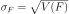 are the mean and the standard deviation of .
and 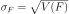 are the mean and the standard deviation of .
We assume that the random variables E, F, L and I are dependent and associated with a gaussian copula which correlation matrix is :

In other words, we consider that the variables L and I are negatively correlated : when the length L increases, the moment of intertia I decreases.
Output
The vertical displacement at free end of the cantilever beam is:
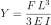
Definition of the model¶
import openturns as ot
import openturns.viewer as viewer
from matplotlib import pylab as plt
ot.Log.Show(ot.Log.NONE)
We define the symbolic function which evaluates the output Y depending on the inputs E, F, L and I.
model = ot.SymbolicFunction(["E", "F", "L", "I"], ["F*L^3/(3*E*I)"])
Then we define the distribution of the input random vector.
Young’s modulus E
E = ot.Beta(0.9, 3.5, 2.5e7, 5.0e7) # in N/m^2
E.setDescription("E")
# Load F
F = ot.LogNormal() # in N
F.setParameter(ot.LogNormalMuSigma()([30.e3, 9e3, 15.e3]))
F.setDescription("F")
# Length L
L = ot.Uniform(250., 260.) # in cm
L.setDescription("L")
# Moment of inertia I
I = ot.Beta(2.5, 4, 310, 450) # in cm^4
I.setDescription("I")
Finally, we define the dependency using a NormalCopula.
myDistribution = ot.ComposedDistribution([E, F, L, I])
Create the design of experiments¶
We consider a simple Monte-Carlo sampling as a design of experiments. This is why we generate an input sample using the getSample method of the distribution. Then we evaluate the output using the model function.
sampleSize_train = 10000
X_train = myDistribution.getSample(sampleSize_train)
Y_train = model(X_train)
The following figure presents the distribution of the vertical deviations Y on the training sample. We observe that the large deviations occur less often.
histo = ot.HistogramFactory().build(Y_train).drawPDF()
histo.setXTitle("Vertical deviation (cm)")
histo.setTitle("Distribution of the vertical deviation")
histo.setLegends([""])
view = viewer.View(histo)
Create the metamodel¶
We recall that the metamodel writes as:
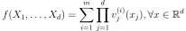
with:
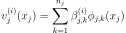
We should define :
The family of univariate functions 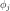. We choose the orthogonal basis with respect to the marginal distribution measures.
The maximal rank
. Here value is set to 5
The marginal degrees 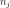. Here we set the degrees to [4, 15, 3, 2]
factoryCollection = [ot.OrthogonalUniVariatePolynomialFunctionFactory(
ot.StandardDistributionPolynomialFactory(_)) for _ in [E, F, L, I]]
functionFactory = ot.OrthogonalProductFunctionFactory(factoryCollection)
nk = [4, 15, 3, 2]
maxRank = 1
Finally we might launch the algorithm:
algo = ot.TensorApproximationAlgorithm(
X_train, Y_train, myDistribution, functionFactory, nk, maxRank)
algo.run()
result = algo.getResult()
metamodel = result.getMetaModel()
The run method has optimized the hyperparameters of the metamodel ( coefficients).
coefficients).
We can then print the coefficients which have been estimated using a double loop.
tensor = result.getTensor()
for j in range(myDistribution.getDimension()):
print("j =", j)
for i in range(maxRank):
for k in range(nk[j]):
print(tensor.getCoefficients(i, j)[k])
Out:
j = 0
722978894763.0879
-92472135748.45401
14102006704.869831
-2251795745.5194407
j = 1
6.151045701074995e-07
4.570634307488695e-05
0.0014193467595821612
0.020471561588707807
0.13686087599303254
0.41052889266254844
0.6035367755553036
0.5410446292536881
0.34889621690989847
0.17092195867982998
0.06373150117108918
0.017649187091628014
0.0034400009010138732
0.0004227931554202656
2.4726907431702767e-05
j = 2
0.9994201070652384
0.034048618403352375
0.00037573731554928593
j = 3
0.9977346671062337
-0.06727208971343898
Validate the metamodel¶
We finally want to validate the kriging metamodel. This is why we generate a validation sample which size is equal to 100 and we evaluate the output of the model on this sample.
sampleSize_test = 200
X_test = myDistribution.getSample(sampleSize_test)
Y_test = model(X_test)
The MetaModelValidation classe makes the validation easy. To create it, we use the validation samples and the metamodel.
val = ot.MetaModelValidation(X_test, Y_test, metamodel)
The computePredictivityFactor computes the Q2 factor.
Q2 = val.computePredictivityFactor()[0]
Q2
Out:
0.9997018971920929
Since the Q2 is larger than 95%, we can say that the quality is acceptable.
The residuals are the difference between the model and the metamodel.
r = val.getResidualSample()
graph = ot.HistogramFactory().build(r).drawPDF()
view = viewer.View(graph)
We observe that the negative residuals occur with nearly the same frequency of the positive residuals: this is a first sign of good quality. Furthermore, the residuals are most of the times contained in the [-1,1] interval, which is a sign of quality given the amplitude of the output (approximately from 5 to 25 cm).
The drawValidation method allows one to compare the observed outputs and the metamodel outputs.
graph = val.drawValidation()
graph.setTitle("Q2 = %.2f%%" % (100*Q2))
view = viewer.View(graph)
plt.show()
We observe that the metamodel predictions are close to the model outputs, since most red points are close to the diagonal. However, when we consider extreme deviations (i.e. less than 10 or larger than 20), then the quality is less obvious.
Given that the kriging metamodel quality is sensitive to the design of experiments, it might be interesting to consider a Latin Hypercube Sampling (LHS) design to further improve the predictions quality.
Total running time of the script: ( 0 minutes 1.556 seconds)